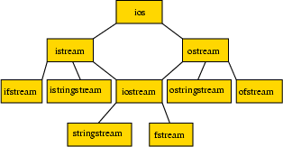

Podrozdziały
16.1 Strumienie
Operacje we/wy realizuje się w C++ za pomocą
strumieni.
Strumień możemy wyobrażać sobie jako strumień informacji,
w postaci bajtów, płynący od źródła do ujścia.
Zachodzą przy tym dwie możliwości:
- informacja płynie od naszego programu do ujścia.
Ujściem może być terminal, plik, gniazdo internetowe,
obszar w pamięci, nazwany potok, systemowa kolejka FIFO,
modem itd. O takim strumieniu mówimy, że jest strumieniem
wyjściowym
(ang. output stream),
- informacja płynie do naszego programu ze źródła.
Źródłem może być terminal, plik itd.
O takim strumieniu mówimy, że jest strumieniem
wejściowym
(ang. input stream).
Do reprezentowania strumieni i obsługi operacji na nich zdefiniowane
są specjalne klasy wyposażone w pola i metody.
Struktura tych klas jest skomplikowana, ale na szczęście nie
musimy jej dokładnie znać, aby z obiektów tych klas i ich składowych
korzystać.
Ogólny, uproszczony schemat klas przedstawiony jest na rysunku
(klasy
istrstream,
ostrstream
i
strstream, omówione poniżej, nie należą do
tej hierarchii):

Podstawową dla nas klasą jest klasa
ios
(sama wyprowadzona z
ios_base); z niej wyprowadzone są (dziedziczą) klasy:
-
istream
— podstawowa klasa reprezentująca
strumienie wejściowe.
W niej, między innymi, zdefiniowane
jest przeciążenie operatora '>>' i tej właśnie
klasy obiektem jest
cin,
reprezentujący standardowy strumień wejściowy
(znany jako stdin).
Bardziej wyspecjalizowane klasy do obsługi strumieni
wejściowych to:
-
istringstream
— źródłem jest obiekt
klasy
string, czyli napis.
Dostępna po dołączeniu za pomocą dyrektywy
#include pliku
sstream.
-
istrstream
— źródłem jest C-napis
(czyli tablica znaków ze znakiem '
\0' jako
ostatnim). Udostępniana w pliku
nagłówkowym
strstream.
UWAGA: ta klasa nie należy do standardu!
-
ifstream
(z ang. intput file stream)
— źródłem jest plik. Udostępniana
po dołączeniu
fstream.
-
ostream
— podstawowa klasa reprezentująca
strumienie wyjściowe. W niej właśnie zdefiniowane
jest przeciążenie operatora '<<' i obiekty
cout,
reprezentujący standardowy strumień wyjściowy
(zwany stdout) oraz
cerr
i
clog, reprezentujące standardowy
strumień błędów (stderr) niebuforowany
i buforowany, a także manipulatory
endl
i
ends.
Bardziej wyspecjalizowane klasy do obsługi strumieni
wyjściowych to:
-
ostringstream
— ujściem jest obiekt
klasy
string, czyli napis.
Udostępniana
po dołączeniu pliku
sstream.
-
ostrstream
— ujściem jest C-napis, czyli
tablica znaków ze znakiem '
\0' jako ostatnim.
Udostępniana po dołączeniu pliku nagłówkowego
strstream.
UWAGA: ta klasa nie należy do standardu!
-
ofstream
(z ang. output file stream)
— ujściem jest plik.
Udostępniana po dołączeniu pliku nagłówkowego
fstream.
Klasa
iostream, z nagłówka o tej samej nazwie, dziedziczy
zarówno z
istream, jak i z
ostream, zatem
dołączając
iostream
zapewniamy funkcjonalność obu.
Podobnie, dołączając
fstream
zapewniamy dostęp do
klas
ifstream
i
ofstream, a dołączając
sstream
do
istringstream
i
ostringstream.
Generalnie zatem:
- jeśli w naszym programie wykonujemy tylko
konsolowe operacje we/wy (pisanie na ekran, czytanie z
klawiatury), to wystarczy dołączyć plik nagłówkowy
iostream;
- jeśli wykonujemy operacje na plikach, to trzeba
włączyć plik nagłówkowy
fstream;
- jeśli wykonujemy operacje we/wy, dla których źródłem lub
ujściem są obiekty klasy
string, to należy
dołączyć
sstream.
- jeśli wykonujemy operacje we/wy, dla których źródłem lub
ujściem są C-napisy, to należy
dołączyć
strstream.
16.1.1 Strumienie predefiniowane
Po dołączeniu pliku nagłówkowego
iostream
mamy do dyspozycji cztery już otwarte strumienie:
jeden wejściowy —
cin, i trzy wyjściowe —
cout,
cerr
i
clog.
Nazwy te są w rzeczywistości nazwami obiektów reprezentujących
strumienie; dlatego, jak się przekonamy, można na ich rzecz
wywoływać metody. Predefiniowane strumienie to:
-
cin
—
standardowy strumień wejściowy.
Źródłem jest standardowy strumień wejściowy
(stdin)
przydzielony procesowi wykonującemu program przez system
operacyjny; zwykle jest to klawiatura, ale można to zmienić.
-
cout
—
standardowy strumień wyjściowy.
Ujściem jest standardowy strumień wyjściowy
(stdout)
przydzielony procesowi wykonującemu program przez system
operacyjny; zwykle jest to ekran terminala, ale często jest
przekierowywany do pliku. Strumień ten
jest buforowany, a więc wpisane tam znaki mogą
pojawiać się na ekranie z opóźnieniem, albo w ogóle
się nie pojawić, jeśli program zakończył się
przedwcześnie i bufor wyjściowy nie zdążył zostać
opróżniony.
-
cerr
—
standardowy strumień komunikatów o błędach.
Ujściem jest standardowy strumień komunikatów
o błędach
(stderr),
przydzielony procesowi wykonującemu program przez system
operacyjny; zwykle jest to ekran terminala. Strumień ten
nie jest buforowany, a więc wpisane tam znaki
powinny ukazać się na ekranie natychmiast i być widoczne
nawet jeśli zaraz potem program załamie się.
-
clog
—
to również strumień związany z
stderr, tyle,
że buforowany.
Ze wszystkich tych strumieni można korzystać w znany nam już sposób
z użyciem operatorów '<<' (wyjście, czyli pisanie)
lub '>>' (wejście, czyli czytanie).
Można używać też metod, które będą opisane w dalszym ciągu
tego rozdziału.
T.R. Werner, 28 września 2018; 23:31